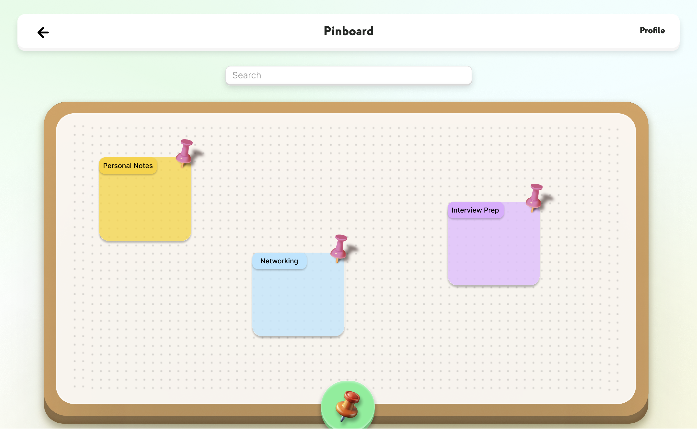
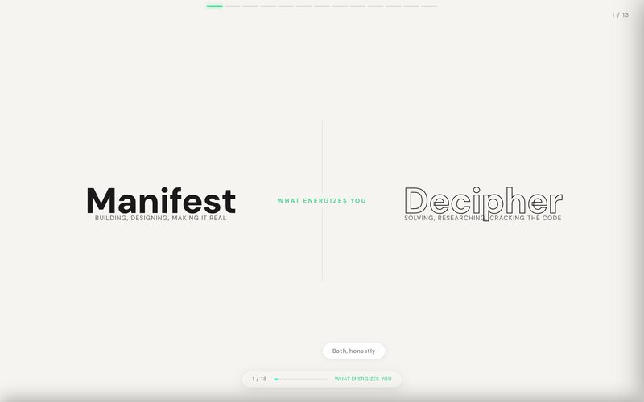
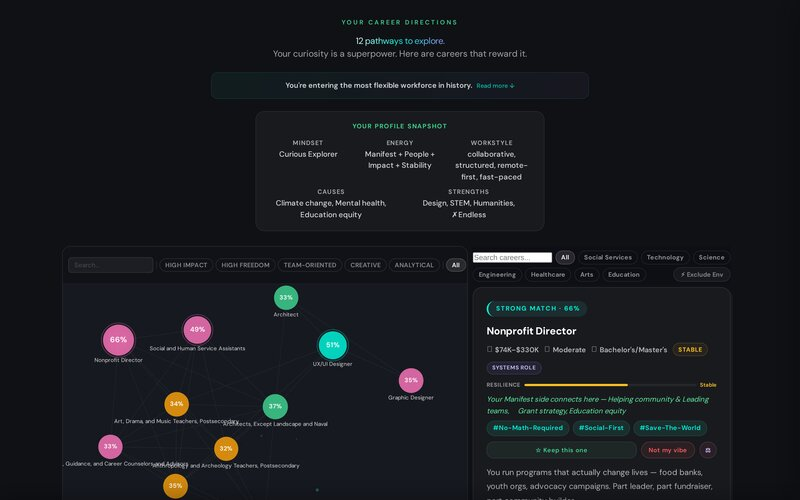
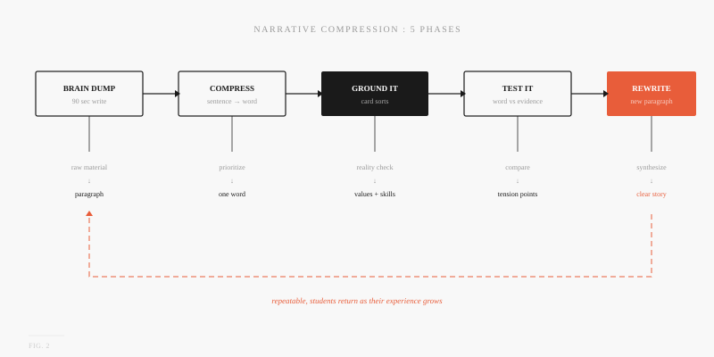

§ 01 / Working reports
Five working reports and a workshop,
2024 to the present.
Each report is a project that was deployed with students, revised over multiple academic terms, and documented through design review and instructor field notes. Every report carries front-matter (author and collaborators, dates, cohort size, status), method, findings, iteration log, references, and cross-links to the research questions it addresses.
Filter by type
Report 01 / Sensemaking environment Concluded · v6
DartWorld
Spatial narrative platform · Dartmouth College · 2024–2026
Context
A three-part platform built with student developer teams from Dartmouth's DALI Lab (2024–2026): a reflective onboarding, a navigable 3D environment, and a longitudinal journaling pinboard. Rebuilt each term by a new DALI student team; each term was a design-iteration cycle.
Question
Method
Design iteration over multiple versions, documented through design review and instructor field notes. Analysis of engagement traces and journal entries was not conducted. Archetype clustering, longitudinal journaling, spatial mapping.


Report 02 / Exploration instrument Active · v2
Synapse
Spatial career exploration · 460 occupations / 13 questions · sethlooper.com/synapse · 2024–present
Context
A career exploration tool that replaces the ranked list with a spatial map. 13 either/or questions produce a profile; 460 occupations (from BLS and O*NET) are arranged on a map where similar careers sit near each other.
Question
What design principles help spatial interfaces support people in exploring rather than selecting? Addresses RQ 2.
Method
Iterative redesign: ranked-list version (v1) replaced by spatial-map version (v2). Whether the map format increases exploration over the list format is one of the open empirical questions in the working paper's §5.3. Spatial mapping, binary elicitation.


Report 03 / Deliberation system Concluded
Career Design Lab
Identity sensemaking program · Dartmouth College · 2024–2026
Context
A term-long program that wove six tools, Identity Mapping Studio, Tile Sorting, Pattern Distillation, OneWord, Launch Studio, the Sequence, into a single arc. Each term was a design-iteration cycle.
Question
Method
Design iteration across multiple versions. Six tools, each piloted independently before integration. Card-sort triangulation, narrative compression, peer conversation.
Six tools
Final cycle
The last version iterated the sequence of identity work and pattern work. The program concluded in 2026.
Related field note
"Compression needs a witness", why I moved Pattern Distillation from solo work to peer dyads.
Report 04 / Narrative workshop Concluded
Narrative by Design
Career narrative workshop · Dartmouth College · 2024–2026
Context
A 90-minute facilitated workshop built around narrative compression: paragraph → sentence → single word. Paired with card sorts (Knowdell values, a strengths sort informed by CliftonStrengths themes, Knowdell Motivated Skills) and an AI-as-mirror layer at ccd-nbd.vercel.app.
Question
Method
Multi-term pilot at Dartmouth, 2024–2026. Compression run both privately and in dyads. AI suggestions reflect the student's own material back without prescribing. Compression, card-sort triangulation, AI-as-mirror.


Report 05 / Field-specific toolkit Active · v4
Threshold
Architecture career toolkit · Independent · thresholdarch.com · 2025–present
Context
A career toolkit specifically for architecture, landscape architecture, and urban design. Started as a flat resource directory; evolved into a reflection-and-resource platform that uses the studio critique format students already know.
Question
What generalizes across professions, and what has to be rebuilt for each one? Addresses RQ 5.
Method
Field-specific design over four versions. Test case for my broader argument that reflection methods generalize but vocabulary doesn't. Critique-as-reflection.
Workshop / Mentor training Single delivery
Inclusive Leadership Lab
Two-hour facilitated workshop · Dartmouth · May 22, 2026
Context
A two-hour workshop for international undergraduate peer mentors at Dartmouth, preparing them for fall mentor-mentee match introductions. Run by ISEO and the Career Design Lab, and delivered once.
Question
Method
A recombination of earlier methods for a new population: narrative compression from NBD, the Knowdell card sort from CDL, and the Burnett & Evans Odyssey Plan adapted for mentor purpose. An informal pre-workshop check-in, run by the program, shaped which modules got emphasis; its responses are not reported here. No post-workshop evaluation was conducted. See also the field note: Anchor, then hold space.
Connected layers
The reports above are projects. The research questions they address, the methods they use, and the literatures they draw on are documented separately.
The animating questions and how the projects map onto them.
Working write-ups of the methods that recur across projects.
The framework paper, six prototype-level working reports, and two conceptual papers, with full references.